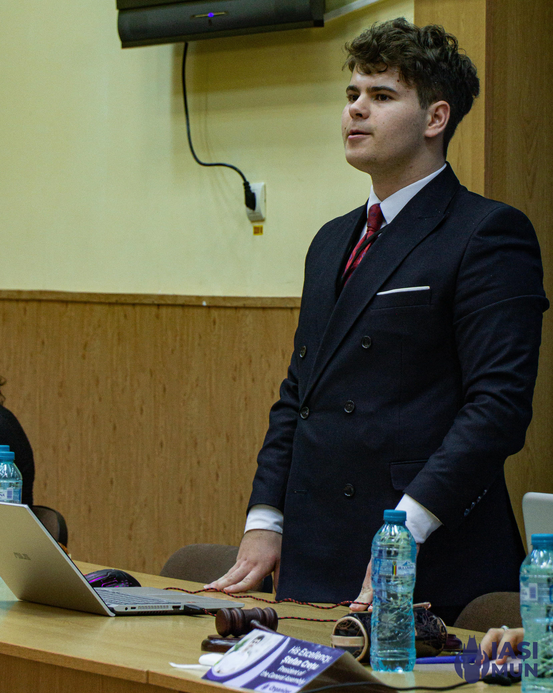

Robert Voaides

Summary
I am highschool student at Petru Rares National College in Piatra Neamt. My interest have been diverse
with a particular interdiciplinary approach. I have knowledge in science, such as:
- Physics
- Astrophysics
- Computer Science
- Maths
Additionally, I have an orientation towards:
- Law
- Politics
- Public Speaking
Education
This is my educational background, spanning the years 2012-2023:
2019-2023
- Colegiul National "Petru Rares", Piatra Neamt
2018-2019
- Scoala Gimnaziala nr. 1, Bicaz Chei
2018-2012
- Scoala Gimnaziala nr. 1, Bicazu Ardelean
Work Experience/Volunteering work
Being a highschool student, my experience on the labour market amounts to
zero. However, I have participated in several projects which
have simulated a working environment and which have enabled me to learn
a mass of useful skills.
- Magurele science and technolongy summer school
- Chairperson an Model Nato
- Deputy President of the General Assembly at PNMUN
- President of RaresMUNClub
Skills
Here you have my skills enlisted:
- French speaking and Translation
- English Speaking and Translation
- C++, Python, HTML
- Self-learning and good Reasearch Abilities
- Persuasion
Awards and certification
You will have enlisted my certifications:
And, as for prizes, you can find my prizes at the Physics National Olympiad
Contact
Hobbies
{kind=link}
.jpeg){kind=link}